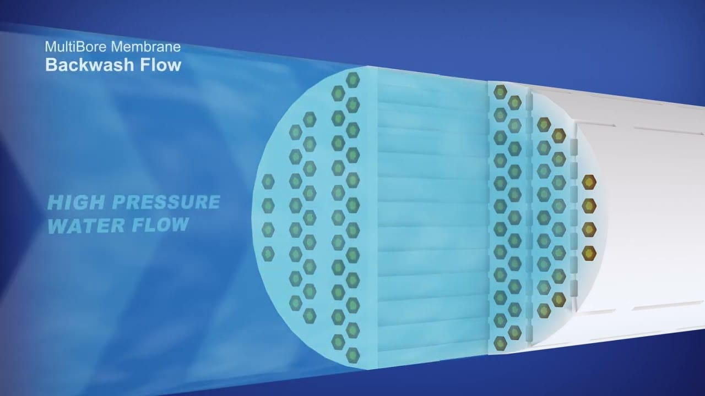
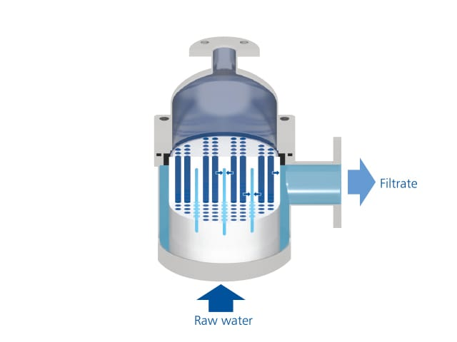

Membranas tubulares multibore de ultrafiltração disponíveis em duas séries: C-Series (cerâmica — máxima durabilidade e resistência química/térmica) e P-Series (polimérica — alta performance com melhor custo-benefício). A solução ideal para cada demanda de qualidade, capacidade e condição de operação.

A tecnologia MultiBore® foi desenvolvida para superar as limitações das membranas tubulares convencionais de canal único. Cada módulo contém múltiplos canais paralelos (7 canais por membrana na geometria padrão), o que distribui melhor as forças mecânicas e aumenta significativamente a robustez estrutural — eliminando o principal mecanismo de falha das fibras ocas convencionais: o rompimento por pressão.
A geometria multibore também maximiza a área de filtração por módulo e permite fluxos elevados de retrolavagem sem risco de colapso, garantindo maior longevidade e confiabilidade operacional. Disponível em duas séries para atender desde o tratamento municipal de esgoto até aplicações industriais de alta agressividade química e térmica.
7 canais paralelos distribuem forças mecânicas e eliminam o risco de colapso das membranas durante retrolavagem.
Poros de 0,02–0,04 μm retêm 100% de sólidos, bactérias, vírus e protozoários — independente de variações de carga.
Módulos escaláveis em racks externos ou integrados com sistemas MBR — adaptável a qualquer capacidade.
O efluente pressurizado entra pelos canais tubulares dos módulos MultiBore®. A pressão transmembrana (TMP) força o líquido através dos poros de UF, retendo todos os sólidos, coloides, bactérias e protozoários no lúmen. O permeado coletado externamente é encaminhado às etapas subsequentes.
A limpeza das membranas é realizada por ciclos regulares de retrolavagem (fluxo reverso de permeado) e relaxação (pausa na filtração com aeração), além de limpezas químicas periódicas (CIP) com ácido ou álcali de acordo com o fouling identificado. A geometria multibore suporta fluxos de retrolavagem elevados sem risco de dano às membranas, garantindo recuperação completa de fluxo.
Efluente entra nos canais tubulares; permeado coletado externamente após passagem pelos poros de UF.
Fluxo reverso de permeado remove incrustações — geometria multibore suporta alta intensidade sem dano.
Limpeza química programável restaura o fluxo original das membranas mantendo a vida útil projetada.

Filtração terciária de alta confiabilidade para ETEs municipais com reúso
C-Series para efluentes agressivos: alimentícia, química, petroquímica e farmacêutica
Produção de água de alimentação de alta qualidade para sistemas de osmose reversa e eletrodesionização
Barreira absoluta para projetos de reúso municipal, industrial e predial
Segunda barreira no sistema de múltipla barreira para máxima segurança no reúso
Módulos externos de UF integrados a biorreatores para ETEs municipais de grande capacidade
As membranas Aqua MultiBore® oferecem a solução ideal para cada aplicação. Consulte nossa equipe técnica.